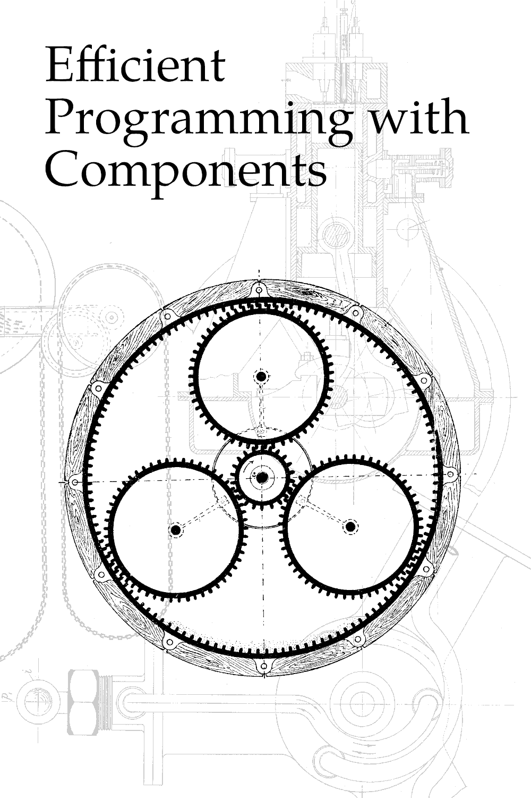

[
previous
,
contents
,
next
]

Course by:
Alexander A. Stepanov
(2013)
Notes by:
Justin Meiners
(2021)
Source:
GitHub
Foreword
Acknowledgments
FAQ
1. Choosing data structures and algorithms
Reflections on Trusting Trust
Hello, World
Number of unique elements
Equality vs ordering
Correct solution
Use the correct STL data structures
Two fundamental performance metrics
Code
2. Regular types and other concepts
We don't know how to program yet
The motivation for concepts
Closure property for containers
Semiregular types
Copy constructor
Assignment operator
Destructor
Regular types
Equality operator
Total orderings
Less than operator
3. Singleton: a pattern for regular types
Learning C++ isn't as hard as it appears
Singleton: a pattern for regular types
Not the object oriented pattern
Template and type functions
Guidelines for writing classes
Semi-regular singleton
Optimize the common case
Virtual functions, virtual destructors, and OOP
Regular singleton
Equality and the three laws of thought
Why can't the compiler generate == and !=?
Totally ordered singleton
Specifying concepts
Implicit type conversion
Code
4. Instrumented: a performance measuring tool
Great language designers
Instrumented class
Redefining regular operations with counting
Storing counts
How should we use enum?
Use all the language features
Using instrumented to analyze sort
Normalizing data
What data should we test on?
Measuring solution to unique elements
Code
5. Swap: a fundamental component
The magic spoon
What is a component?
Relative and absolute efficiency
Three tests of a language's ability to write components
Swap
General swap
Specialized swap
XOR swap
Is the inline keyword important?
Code
6. Ordering, min, and max
Learning to design code
Reviewing Total Orderings
Weak orderings
Min
When elements are equal
Correct implementation
Less than function object
Max
Sort2
Implementation
Fundamental logical laws are not always obeyed
Final code
7. Minimum selection on ranges
The standard is not a limitation on ideas
Minimum element in a range
Iterator conventions
Forward iterator
Finding min and max together
Code
8. Lisp-like lists
Lists in lisp and Scheme
Why is malloc so slow?
List pool
Value (car)
Next (cdr)
Free
Allocate (cons)
Free list helper
List queue
Code
9. Iterators
History of iterators
Affiliated types for iterators
Historical artifacts
List pool iterators
Constructors
Dereference
Pre-increment, post-increment
Equality
Thoughts about iterator design
Should we add safety guards?
Why are forward iterators not comparable?
Everything on a computer is totally ordered
Code
10. Balanced binary reduction
Alice in wonderland
Smallest and second smallest element
What about divide and conquer?
Tournament tree shapes
Binary counting and reduction
Handling overflow
Implementation
Reduction
Binary counter class
Start with algorithms
Counter storage
What is in-place memory usage?
Code
11. Smallest and second-smallest element
Write code backward
Overview
Combining binary counter and list pool
Inner loop
Comparing iterator values
Reduction operation
Finishing the scaffolding
Why do we need the typename keyword?
Code
12. Merge Sort
The discovery of generic programming
Iterators as a concept
Kinds of iterators
Linked iterator
Linked iterator is "unsafe"
Reverse linked ranges
Merging sorted lists
Simple merge
Merge with fewer comparisons
Is it worth it?
Merge sort
Code
13. Searching
History of binary search
bsearch is wrong
What is correct code?
Linear search
Trimming the standard
Helper functions
Bounded and counted ranges
Advance and distance functions
Code
14. Binary Search
Bisection in math
Partitions
Is partitioned
Partition point
Upper and lower bound
Is sorted
Binary search with partition points
Project: Partitioning
Code
15. Merge inplace
Reinventing things
Merging adjacent lists
Interface
Algorithm
Implementation
Naming things
Sort from merge
Code
16. Optimizing stable sort
The measure of a good programmer
How good is our stable sort?
A plan for improvement
Requirements
Ideas to explore
First steps
17. Adaptive merge sort
"temporary" buffers in STL
Merge with buffer
Performance test
Adaptive merge
Performance test
Code
18. Binary insertion sort
The Organ Grinder
Strategy
Insertion sort variations
When is insertion sort useful?
Naming insertion sort function
Binary insertion sort
Rotate
Rotate for bidirectional iterators
Rotate for forward iterators
Should we support forward iterator?
Code
19. Linear insertion sort
Thank you, noble art.
Linear insertion sort
Linear insert
Insertion sort
Sentinel version
Insertion sort in quicksort
Selection sort
Preconditions are essential
Final project
Code
[
previous
,
contents
,
next
]